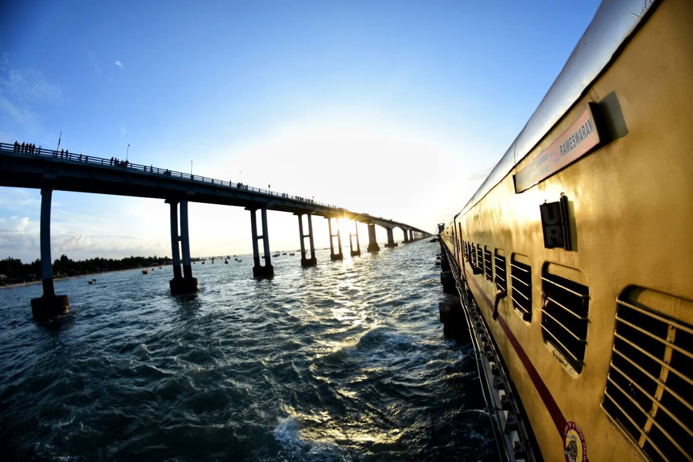
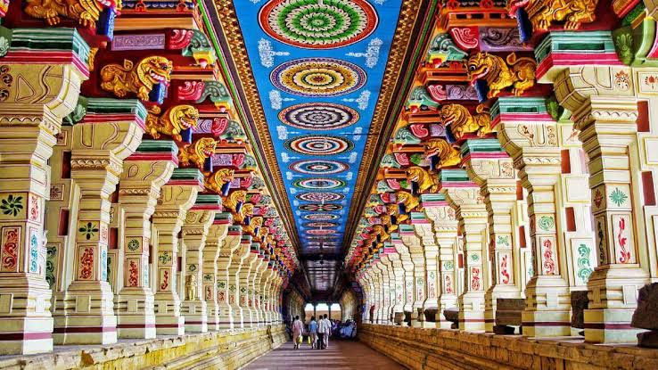
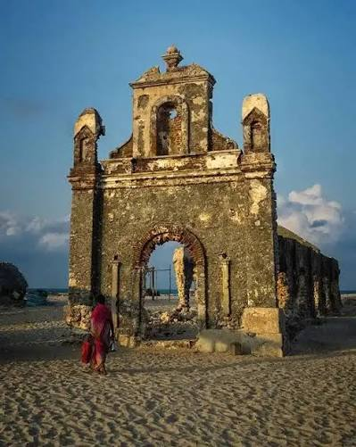
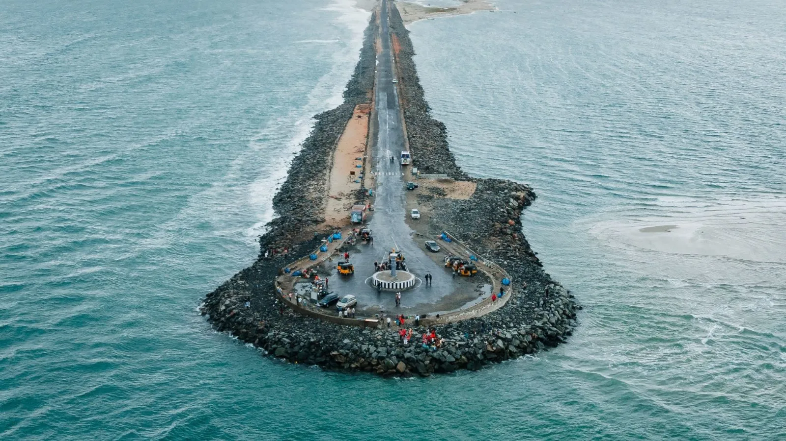
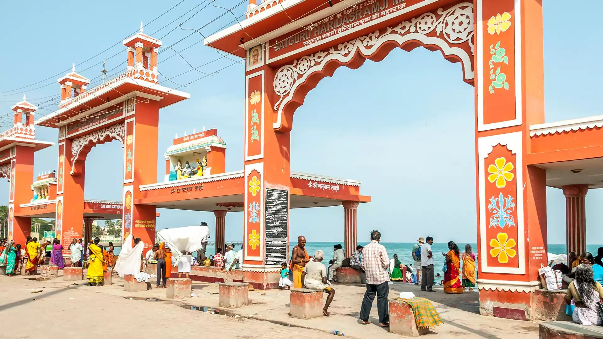
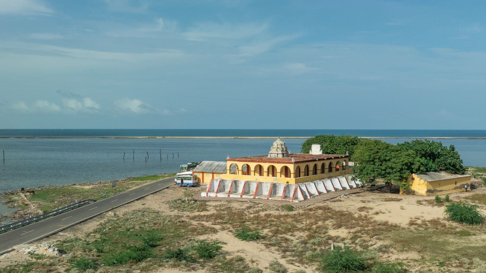
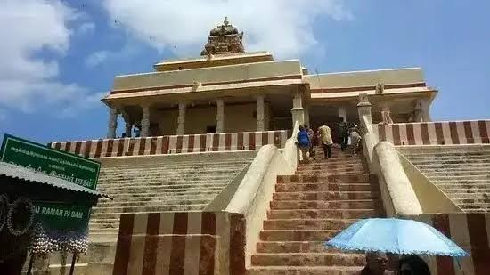
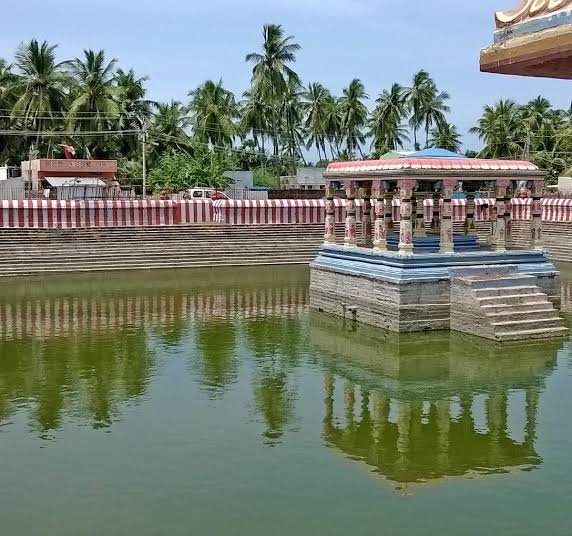
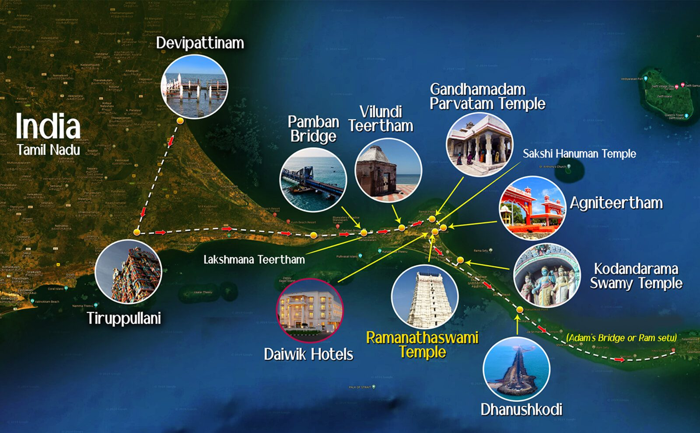

Discover beautiful places around Rameswaram

The Pamban Bridge is a historic and iconic sea link connecting Mandapam on the mainland of India to Rameswaram Island in Tamil Nadu.

The Sri Arulmigu Ramanathaswamy Temple is a holy Hindu shrine dedicated to Lord Shiva, located on an island in Tamil Nadu

The old church in Rameswaram is the iconic ruined St. Antony's Church located in the ghost town of Dhanushkodi

Dhanushkodi is the southern tip of Pamban Island in Tamil Nadu, serving as the dramatic "land's end" and the last motorable road of India where the Bay of Bengal and the Indian Ocean meet

Agni Theertham is a sacred beach and bathing ghat located on the eastern shore of Rameswaram, directly opposite the Sri Ramanathaswamy Temple in Tamil Nadu

The Kothandaramaswamy Temple is a sacred, ocean-surrounded shrine dedicated to Lord Rama located 13 kilometers from Rameswaram on the way to Dhanushkodi

Ramarpatham is an important tourist place in Rameswaram. Ramar patham is also spelled as Ramar Padam or Ramar padham or Gandhamadhana Parvatham.

Lakshmana Theertham is located just 1 km away from Rameshwaram Temple. It is close to Rama Theertham, Sita Theertham and Panchmukhi Hanuman Temple

Rameswaram is a beautiful island destination in Tamil Nadu, famous for its temples, beaches, bridges and peaceful coastal scenery. It is a wonderful place to explore history, culture and nature.